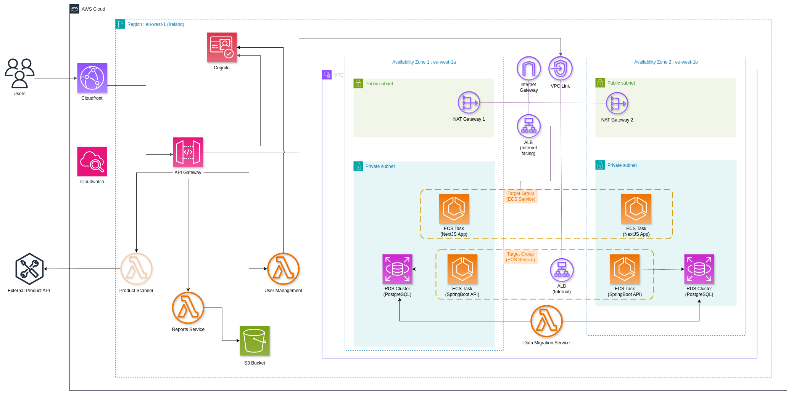

SupplyWise
architecture
definitions
sprints
connections
about us
Documentation Website
Software Engineering - Group Assignment
project proposal
Architecture

Definitions of Ready and Done
Definition of Ready
Formatted as "As a (...), I want (...) so that (...)"
Short and self-explanatory
Defined story point, with a maximum of 3-5
Acceptance criteria as "Given (...) when (...) then (...)"
INVEST methodology
Estimated priority, given by the position in the backlog
Definition of Done
Developed
Tested (Sonarcloud, Lighthouse)
Documented (SwaggerUI)
Compliant with Acceptance Criteria
Peer reviewed and approved by the Product Owner
Merged into central branch ("develop")
sprints
Click "Sprint Review" for more details
- User Story
- Task
- Bug/Problem
connections
jira
jira
github
github
video demo
video demo
final presentation
final presentation
about us
Alexandre Ribeiro
Guilherme Amorim
Maria Sardinha
Miguel Miragaia
Miguel Pinto